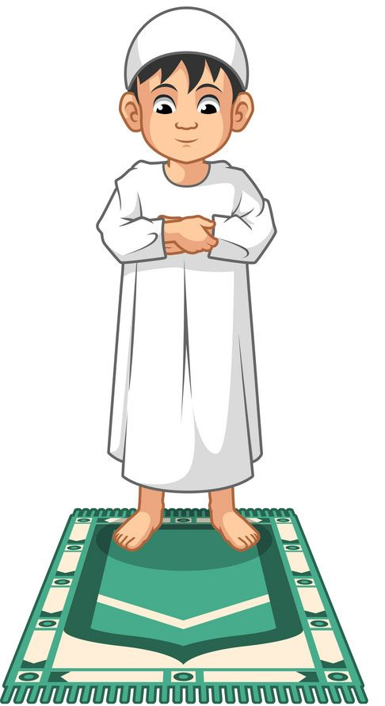
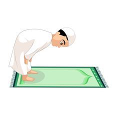
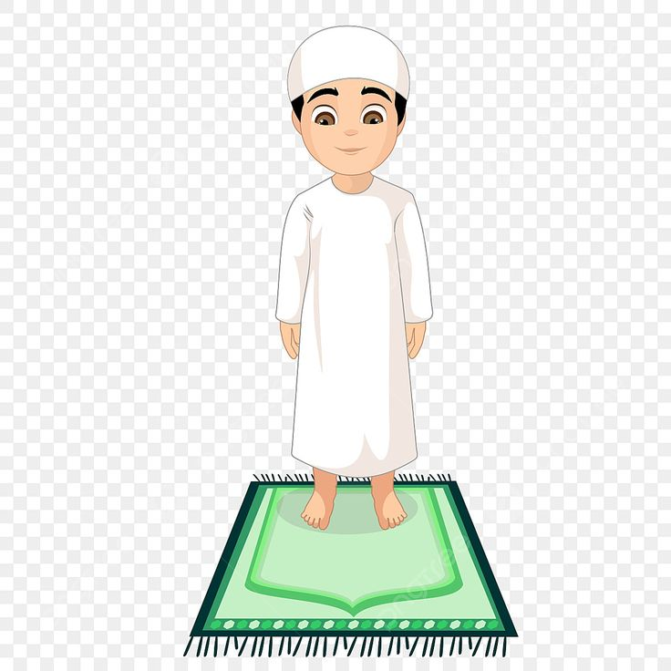
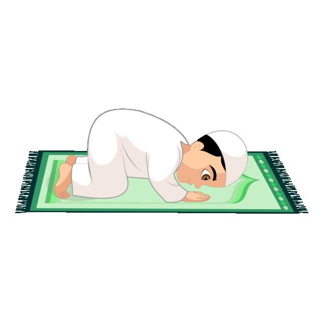
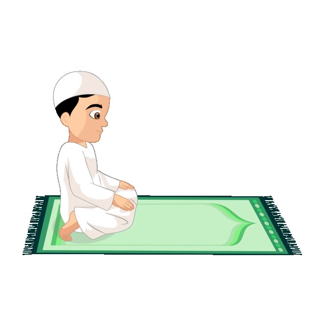
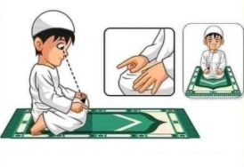
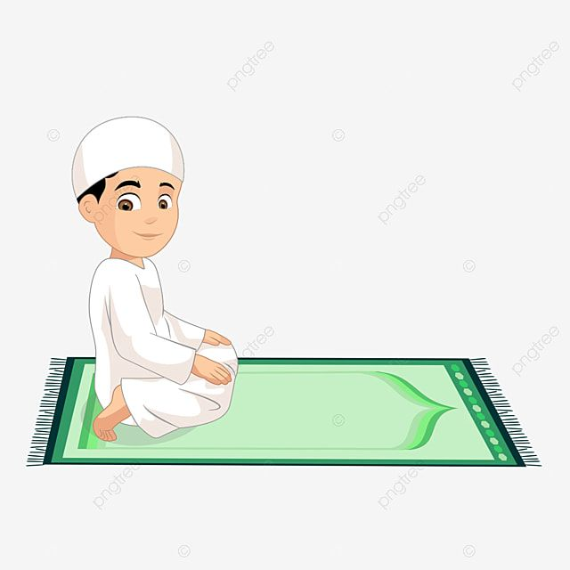

Takbiratul Ihram

اللّٰهُ أَكْبَرُ
Allahu Akbar
Allah Maha Besar
Doa Iftitah
اللّهُمَّ بَاعِدْ بَيْنِي وَبَيْنَ خَطَايَايَ كَمَا بَاعَدْتَ بَيْنَ الْمَشْرِقِ وَالْمَغْرِبِ، اللّهُمَّ نَقِّنِي مِنْ خَطَايَايَ كَمَا يُنَقَّى الثَّوْبُ الْأَبْيَضُ مِنَ الدَّنَسِ، اللّهُمَّ اغْسِلْنِي مِنْ خَطَايَايَ بِالثَّلْجِ وَالْمَاءِ وَالْبَرَدِ ..
Allāhumma bā‘id baynī wa baina khaṭāyāya, kamā bā‘adta baina al-masyriqi wa al-maghrib. Allāhumma naqqinī min khaṭāyāya, kamā yunaqqā ath-thawbu al-abyaḍu mina ad-danas. Allāhumma aghsilnī min khaṭāyāya, bi ath-thalji wa al-mā’i wa al-barad....
"Ya Allah, jauhkanlah antara aku dan kesalahan-kesalahanku, sebagaimana Engkau menjauhkan antara timur dan barat. Ya Allah, sucikanlah aku dari kesalahan-kesalahanku sebagaimana pakaian putih disucikan dari kotoran. Ya Allah, cucilah aku dari kesalahan-kesalahanku dengan air, salju, dan embun."...
Rukuk
سُبْحَانَ رَبِّيَ الْعَظِيمِ
Subḥāna rabbiyal ‘aẓīm
Maha Suci Tuhanku Yang Maha Agung
I'tidal
سَمِعَ اللّٰهُ لِمَنْ حَمِدَهُ
رَبَّنَا وَلَكَ الْحَمْدُ
Sami’allāhu liman ḥamidah. Rabbana wa lakal ḥamd
Allah mendengar orang yang memuji-Nya...
Sujud
سُبْحَانَ رَبِّيَ الأَعْلَى
Subḥāna rabbiyal a‘lā
Maha Suci Tuhanku Yang Maha Tinggi
Duduk antara Dua Sujud
اللَّهُمَّ اغْفِرْ لِي، وَارْحَمْنِي، وَاجْبُرْنِي...
Allāhumma ighfir lī, warḥamnī...
Ya Allah, ampunilah aku, rahmatilah aku...
Tasyahud Awal
التَّحِيَّاتُ لِلّٰهِ وَالصَّلَوَاتُ وَالطَّيِّبَاتُ، السَّلَامُ عَلَيْكَ أَيُّهَا النَّبِيُّ وَرَحْمَةُ اللّٰهِ وَبَرَكَاتُهُ، السَّلَامُ عَلَيْنَا وَعَلَىٰ عِبَادِ اللّٰهِ الصَّالِحِينَ، أَشْهَدُ أَنْ لَا إِلٰهَ إِلَّا اللّٰهُ، وَأَشْهَدُ أَنَّ مُحَمَّدًا رَسُولُ اللّٰهِ. ..
At-taḥiyyātu lillāhi waṣ-ṣalawātu waṭ-ṭayyibāt, as-salāmu ‘alaika ayyuhan-nabiyyu wa raḥmatullāhi wa barakātuh, as-salāmu ‘alainā wa ‘alā ‘ibādillāhiṣ-ṣāliḥīn. Asyhadu allā ilāha illallāh, wa asyhadu anna Muḥammadan rasūlullāh....
"Segala kehormatan, keberkahan, dan kebaikan adalah milik Allah. Semoga keselamatan tercurah kepadamu wahai Nabi, beserta rahmat Allah dan berkah-Nya. Semoga keselamatan juga tercurah kepada kami dan hamba-hamba Allah yang shalih. Aku bersaksi bahwa tidak ada Tuhan selain Allah, dan aku bersaksi bahwa Muhammad adalah utusan Allah."...
Tasyahud Akhir
التَّحِيَّاتُ لِلّٰهِ وَالصَّلَوَاتُ وَالطَّيِّبَاتُ، السَّلَامُ عَلَيْكَ أَيُّهَا النَّبِيُّ وَرَحْمَةُ اللّٰهِ وَبَرَكَاتُهُ، السَّلَامُ عَلَيْنَا وَعَلَىٰ عِبَادِ اللّٰهِ الصَّالِحِينَ، أَشْهَدُ أَنْ لَا إِلٰهَ إِلَّا اللّٰهُ، وَأَشْهَدُ أَنَّ مُحَمَّدًا رَسُولُ اللّٰهِ. اللَّهُمَّ صَلِّ عَلَىٰ مُحَمَّدٍ وَعَلَىٰ آلِ مُحَمَّدٍ، كَمَا صَلَّيْتَ عَلَىٰ إِبْرَاهِيمَ وَعَلَىٰ آلِ إِبْرَاهِيمَ، إِنَّكَ حَمِيدٌ مَجِيدٌ. وَبَارِكْ عَلَىٰ مُحَمَّدٍ وَعَلَىٰ آلِ مُحَمَّدٍ، كَمَا بَارَكْتَ عَلَىٰ إِبْرَاهِيمَ وَعَلَىٰ آلِ إِبْرَاهِيمَ، إِنَّكَ حَمِيدٌ مَجِيدٌ. ..
At-taḥiyyātu lillāhi waṣ-ṣalawātu waṭ-ṭayyibātu, as-salāmu ‘alaika ayyuhan-nabiyyu wa raḥmatullāhi wa barakātuh, as-salāmu ‘alainā wa ‘alā ‘ibādillāhiṣ-ṣāliḥīn. Asyhadu allā ilāha illallāh, wa asyhadu anna Muḥammadan rasūlullāh. Allāhumma ṣalli ‘alā Muḥammad wa ‘alā āli Muḥammad, kamā ṣallaita ‘alā Ibrāhīma wa ‘alā āli Ibrāhīm, innaka ḥamīdun majīd. Wa bārik ‘alā Muḥammad wa ‘alā āli Muḥammad, kamā bārakta ‘alā Ibrāhīma wa ‘alā āli Ibrāhīm, innaka ḥamīdun majīd....
"Segala penghormatan, keberkahan, dan kebaikan adalah milik Allah. Semoga keselamatan atasmu wahai Nabi, beserta rahmat Allah dan keberkahan-Nya. Semoga keselamatan dilimpahkan atas kami dan atas hamba-hamba Allah yang saleh. Aku bersaksi bahwa tidak ada Tuhan selain Allah, dan aku bersaksi bahwa Muhammad adalah utusan Allah. Ya Allah, limpahkanlah shalawat kepada Muhammad dan keluarga Muhammad, sebagaimana Engkau telah melimpahkan shalawat kepada Ibrahim dan keluarga Ibrahim. Sesungguhnya Engkau Maha Terpuji lagi Maha Mulia. Dan limpahkanlah keberkahan kepada Muhammad dan keluarga Muhammad, sebagaimana Engkau telah memberkahi Ibrahim dan keluarga Ibrahim. Sesungguhnya Engkau Maha Terpuji lagi Maha Mulia."...
Salam
السَّلَامُ عَلَيْكُمْ وَرَحْمَةُ اللّٰهِ
Assalāmu ‘alaikum wa raḥmatullāh
Semoga keselamatan dan rahmat Allah tercurah atasmu